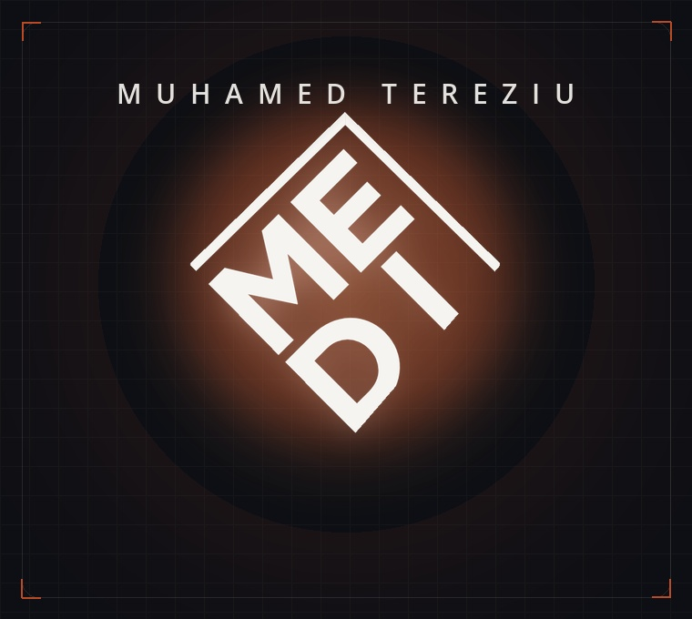
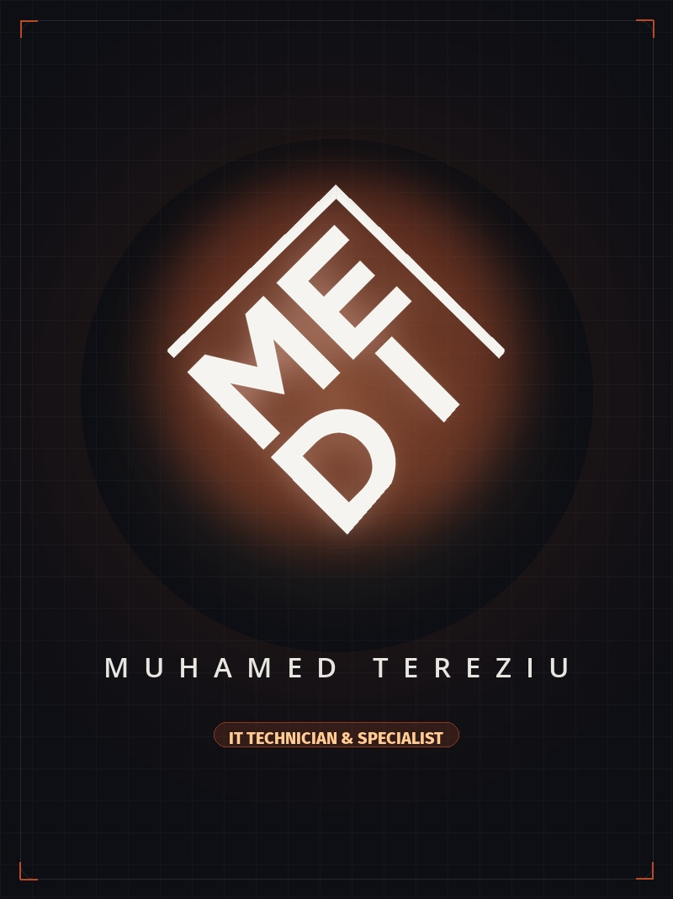
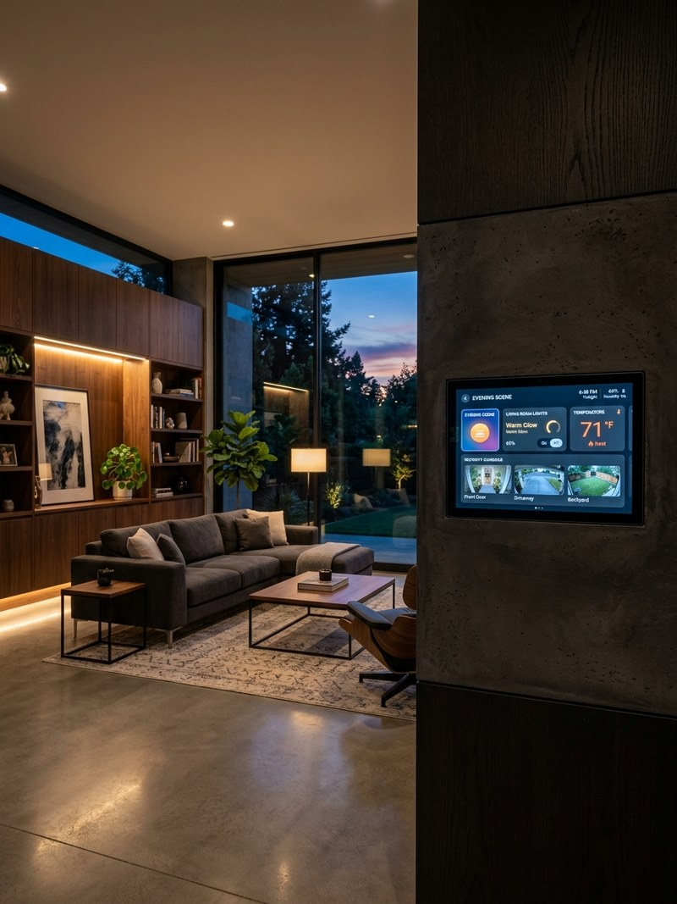
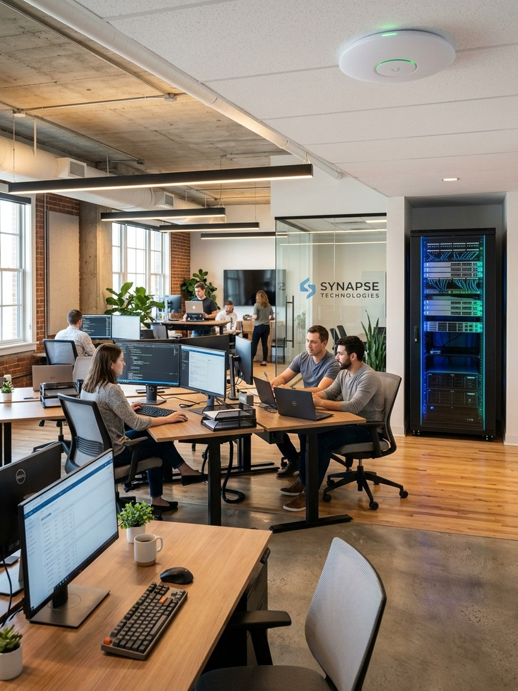
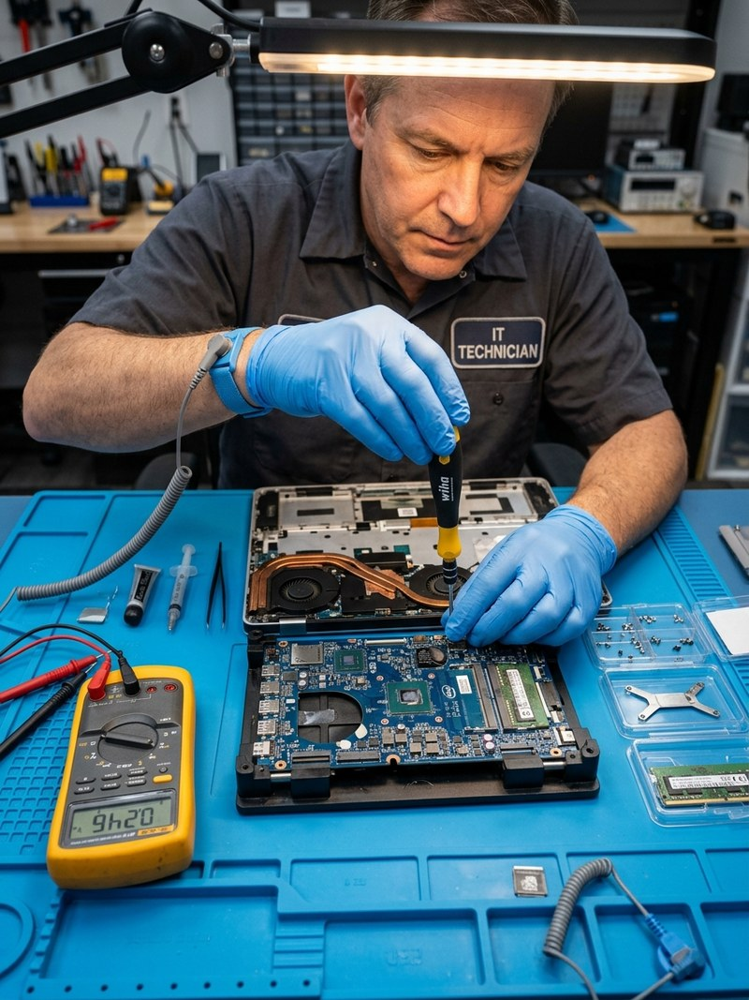
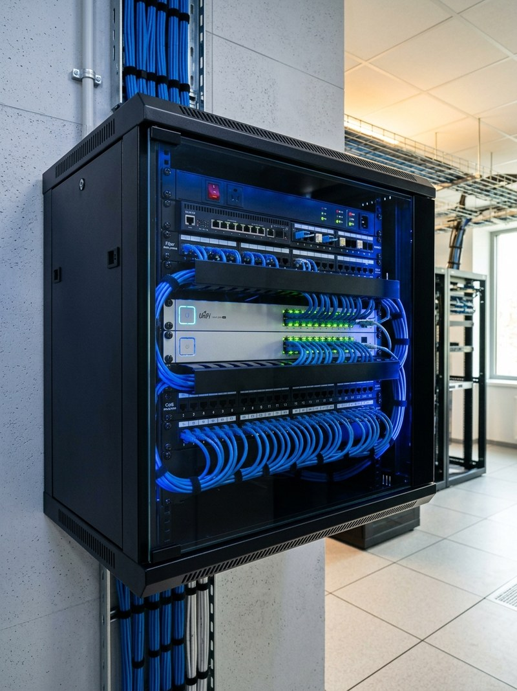
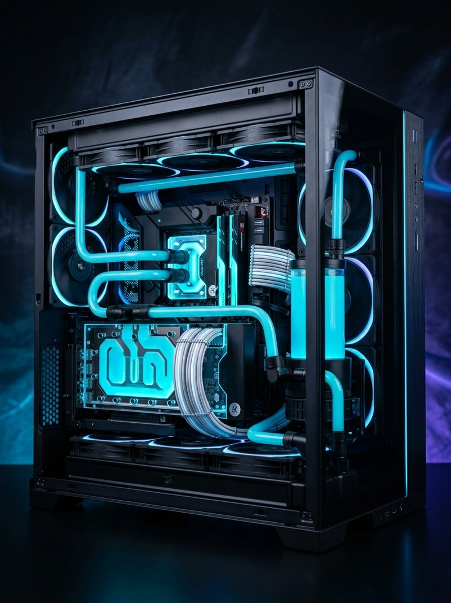
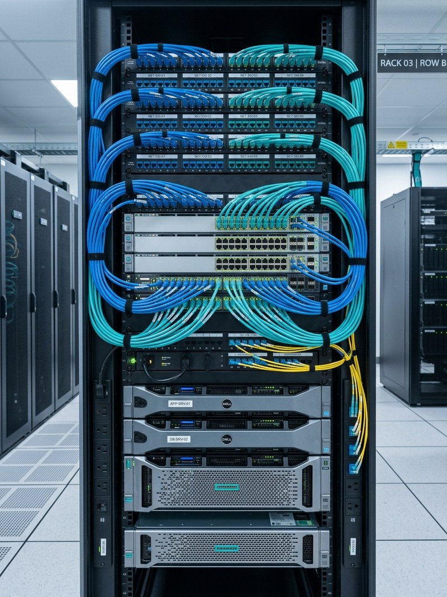
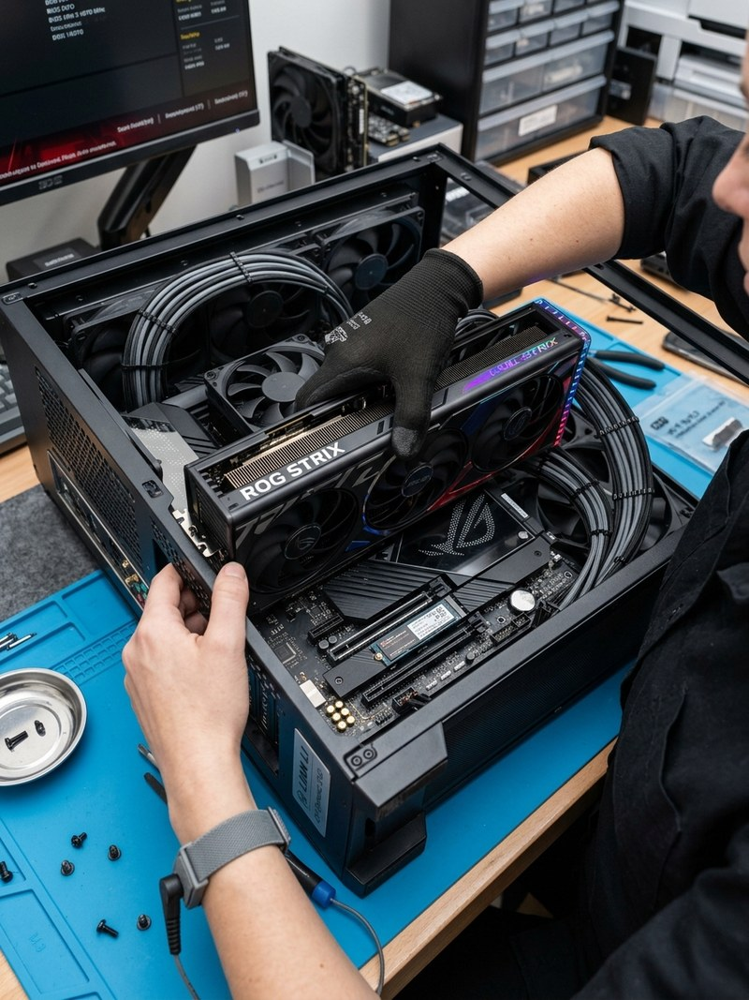
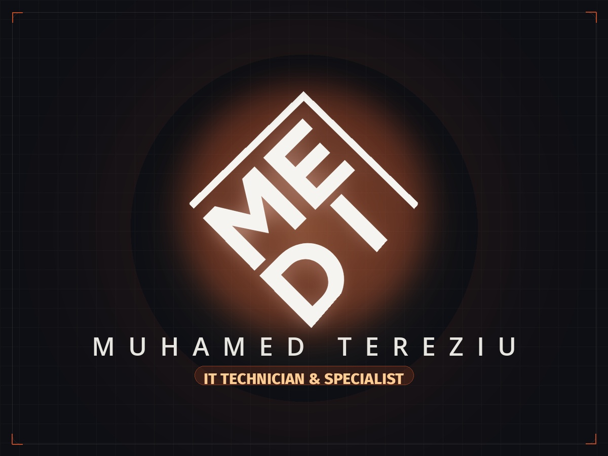

Architecting resilient IT systems, corporate networks & smart tech.
Hi, I'm Muhamed Tereziu. IT Help Desk at Titan Albania, formerly technician at Atom Computers. I engineer mission-critical business networks, build Linux/Windows server infrastructures, automate IoT environments, and assemble high-performance computing hardware.

Combining corporate enterprise support at Titan Albania with over 1.7 years of intensive server, Docker, and hardware operations at Atom Computers.
visitor@1234.al:~$ sysinfo
Muhamed Tereziu · IT Systems & Infrastructure Specialist [Tirana, Albania]
Type a command or click an executable trigger below to inspect system details.
Hands-on infrastructure engineering & enterprise support.
Bridging corporate IT operations, small business infrastructure deployment, and customized smart technology integrations with meticulous precision.

Academic & Professional Foundation
Bachelor of Science in Information Technology from Epoka University. Practical field expertise spanning hardware diagnostics, system virtualization, enterprise networks, and automated business workflows.
Enterprise Standards & Precision Fieldcraft
My journey in information technology balances strict enterprise compliance with practical, component-level engineering. At Titan Albania, I manage day-to-day employee IT infrastructure, network stability, hardware asset governance, CCTV/access security, and process automation utilizing the Microsoft Power Platform.
Prior to Titan, I spent 1 year and 9 months at Atom Computers serving as an IT Technician and IT Support Technician. There, I installed and administered Windows and Linux Servers, containerized applications with Docker, rolled out fault-tolerant TrueNAS storage systems, implemented endpoint security, and assembled bespoke high-performance workstation builds.
Zero-Downtime Approach
Configuring redundant storage (ZFS/RAID), proactive backups, and isolated subnets so your business never stalls.
Security-First Network Design
VLAN segmentation, isolated IoT networks, hardware firewall policies, and secure WireGuard/OpenVPN connections.
Root-Cause Diagnostics
Methodical hardware troubleshooting, component-level repair, and thermal optimization rather than blind parts replacement.
Specialized IT Capabilities & Field Offerings.
Explore the core engineering services offered for private residences, commercial offices, and business organizations. Click any card to view detailed specifications.

Residential · IoTSmart Home Solutions & Automation
Unifying Home Assistant, Apple Home, and Google Home into a local, unthrottled automation hub. Includes lighting, climate, video surveillance, and isolated IoT VLANs.

Commercial · EnterpriseSmall Business IT Solutions
Turnkey IT infrastructure designed to eliminate operational downtime. Structured office networks, TrueNAS storage, multi-AP Wi-Fi mesh, workstation rollouts, and backups.
Software Installation & Maintaining
Certified installations and scheduled software upkeep. Clean deployments of Windows 10/11 & Linux distributions, patch management, endpoint security, and remote troubleshooting.

Hardware · DiagnosticsIT Repair Services & Hardware Servicing
Deep hardware diagnostics, resolving boot failures, thermal bottlenecks, and motherboard/GPU faults. High-speed NVMe SSD & RAM expansions, deep thermal repasting, and data recovery.

Infrastructure · SecurityNetwork Architecture, VLANs & Security
Managed switches, routers, and gateway firewalls. Subnet isolation, VPN tunnels, QoS bandwidth shaping, and professional Ethernet/patch-panel structured cabling.

Workstations · AssemblyCustom PC Assembly & Workstations
Tailored computer assembly engineered for creative studios, developers, simulation workloads, and high-end gaming. Thermal airflow simulation, clean cable routing, BIOS tuning, and stress tests.
Verified Experience & Professional History.
A documented track record across corporate enterprise IT operations, specialized computer service businesses, and academic technical foundations.
Information Technology Help Desk
Titan Albania · Tirana, Albania

Responsible for delivering enterprise end-user IT support and administering corporate infrastructure, network topology, and workstation hardware. Key operational duties include onboarding/offboarding workflows, physical access controls & CCTV monitoring, GDPR compliance protocols, and driving business process automation via the Microsoft Power Platform.
Information Technology Technician
Atom Computers · Tirana, Albania

Spearheaded hands-on IT infrastructure and software implementation projects. Managed installation and configuration of Windows Server and Linux Server environments, implemented Docker containerization, deployed multi-drive NAS systems (TrueNAS), and rolled out centralized Endpoint Security protection.
IT Support Technician
Atom Computers · Tirana, Albania
Provided remote and on-site technical support to diverse B2B and B2C clients, troubleshooting intricate faults across PC hardware, printers, and network connectivity. Built and assembled custom PCs, validating compatibility across high-performance components and software to exact client requirements.
B.Sc. in Information Technology
Epoka University · Tirana, Albania

Rigorous curriculum covering Computer Networks, Operating Systems, Database Management Systems, Computer Architecture, Distributed Systems, and Software Engineering.
Tested Tools, Operating Systems & Frameworks.
Technologies and protocols verified through daily enterprise support, network rollouts, server deployments, and hardware operations.
Hardware & Diagnostics
Component-level testing & assemblyOperating Systems & Servers
Administration, security & tuningNetworking & Cyber Security
Routing, VLANs, Wi-Fi & firewallsSmart Home & IoT Ecosystems
Home automation & surveillanceStorage, Containers & Cloud
Virtualization, backups & automationSupport, Scripting & Utilities
Remote troubleshooting & scriptsSelect what you need & build your direct inquiry.
Check the capabilities matching your project scope. This automatically formats a message for fast review.
Let's discuss your systems or IT requirements.
Whether you represent an enterprise team in Tirana, a growing business upgrading network infrastructure, or need bespoke smart home automation, reach out directly.
Submit an IT Inquiry
Fill out the parameters below to dispatch a message directly to my inbox.